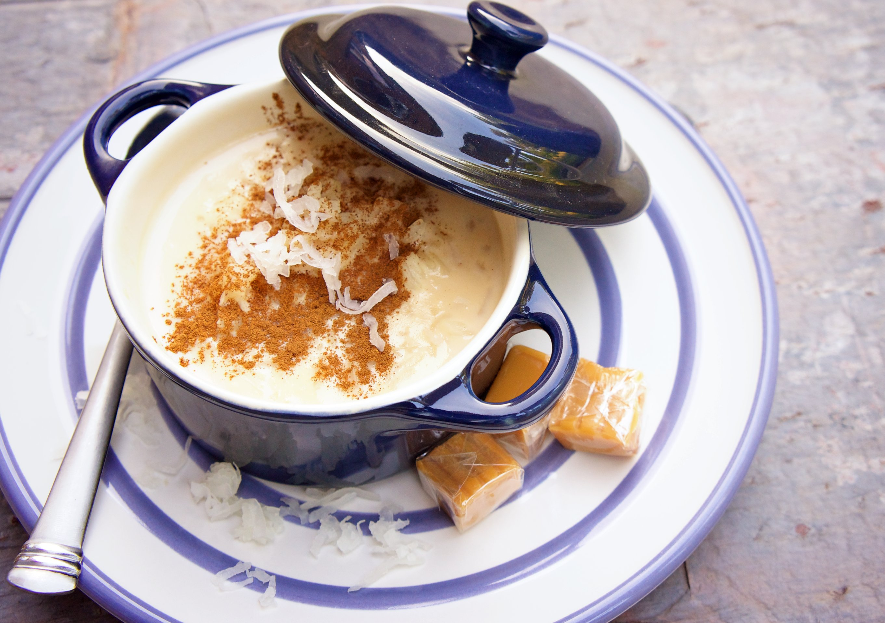

Home
Rice Pudding

This was a favorite of mine growing up. It's a simple yet satisfying
dessert that's perfect for any occasion.
Ingredients
- 1 cup rice
- 4 cups milk
- 1/2 cup sugar
- 1 teaspoon vanilla extract
- 1/2 teaspoon ground cinnamon (optional)
- 1/4 teaspoon salt
Instructions
-
In a medium saucepan, combine the rice, milk, sugar, and salt. Bring to
a boil over medium heat.
-
Reduce the heat to low and simmer, stirring frequently, until the rice
is tender and the mixture has thickened, about 20-25 minutes.
-
Remove from heat and stir in the vanilla extract. If desired, sprinkle
with ground cinnamon before serving.
- Serve warm or chilled. Enjoy your homemade rice pudding!